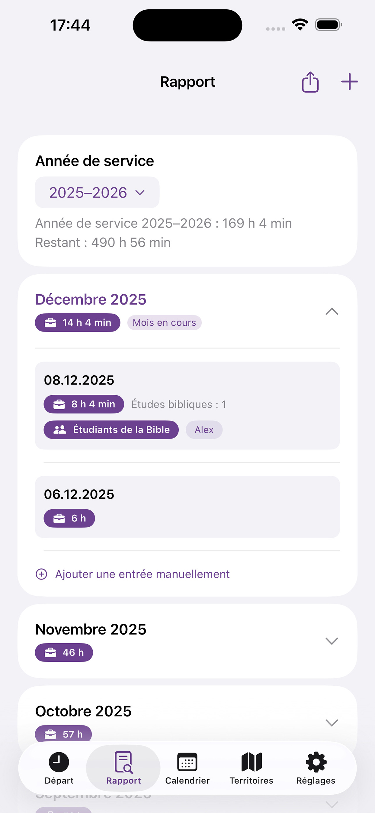
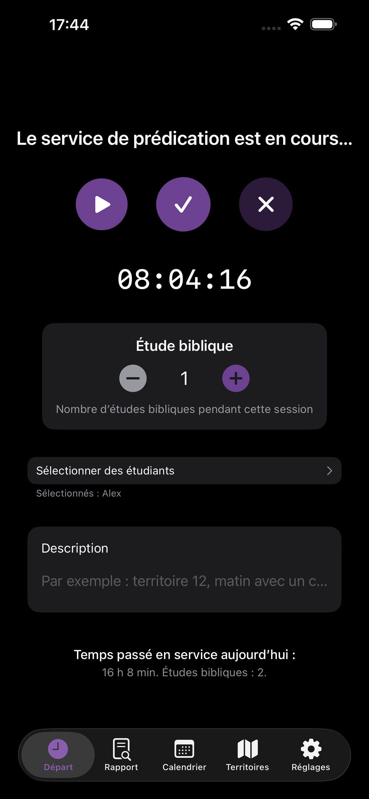

Disponible sur iPhone & iPad • Version 1.8 • 35+ Langues
Votre compagnon complet pour la prédication et le service de pionnier
JW Ministry (Ministry Planner) est l'application complète pour la prédication et le service de pionnier des Témoins de Jéhovah sur iPhone et iPad : chronomètre en direct, rapport de prédication, programme de pionnier permanent ou auxiliaire et fiches de territoires.
Télécharger sur l'App Store
Soutenir le développeur

Scanner avec iPhone / iPad
Pointez l'appareil photo pour ouvrir l'App Store
35+
Langues disponibles
100%
Local & Privé
iPhone & iPad
Design natif iOS
0 Publicité
Gratuit, sans abonnement


Découvrez chaque écran de JW Ministry
Captures d'écran réelles de l'application en français — du chronomètre et des cours bibliques au calendrier de pionnier, aux territoires et au mode sombre OLED.





Tout ce qu'il vous faut pour organiser votre ministère
Conçu pour les proclamateurs, pionniers auxiliaires, permanents et spéciaux.
Chronomètre • Live Activities
Chronomètre, Widgets & Dynamic Island
Lancez le minuteur depuis l'écran d'accueil ou de verrouillage et suivez-le en direct sur la Dynamic Island.
Cours Bibliques • Progression
Suivi des cours bibliques
Associez vos étudiants à chaque entrée du rapport et gardez une trace précise de la leçon étudiée.
Rôles • 15 / 30 / 50 / 100 h
Objectifs de pionnier et cibles personnelles
Prend en charge les objectifs de 15, 30, 50, 90 et 100 heures ainsi qu'un objectif mensuel personnalisé.
Année de Service • Prévu vs Réel
Année de service (Sept.–Août) & Calendrier
Planifiez vos rendez-vous de prédication et le culte familial, et convertissez un plan en rapport d'un simple balayage.
Territoires • Recherche & rappels
Territoires, Immeubles & Rappels de visites
Gérez vos territoires avec photos, couleurs, recherche rapide et rappels automatiques de nouvelles visites.
Confidentialité • Sauvegarde iCloud
Confidentialité 100 % locale & Sauvegarde iCloud
Aucun compte ni serveur externe. Toutes vos données restent sur votre iPhone/iPad.
Nouveautés de la version 1.8
- Calcul automatique des heures planifiées du mois dans le Calendrier et double barre Prévu vs Réel.
- Convertissez une session planifiée du Calendrier en entrée du Rapport d'un simple balayage.
- Recherche instantanée par adresse ou nom dans les Territoires et 10 thèmes de couleurs.
- Prise en charge de la prochaine année de service (2026–2027) dans l'onglet Rapport.
- Optimisation complète pour les dernières versions d'iOS et iPadOS et protection renforcée des sauvegardes.
Pourquoi les proclamateurs et pionniers choisissent JW Ministry
Comparaison complète pour le rapport de prédication, le programme de pionnier et les territoires.
| Fonctionnalité | Notes papier | Anciennes Apps | JW Ministry 1.8 |
|---|---|---|---|
| Chronomètre en direct sur écran verrouillé & Dynamic Island | Non | Non | Oui (Live Activities) |
| Calculateur pionnier (15, 30, 50 h) & année de service (600 h) | Manuel | Partiel | Automatique + Cible perso |
| Comparaison Prévu vs Réel au Calendrier & balayage vers Rapport | Non | Non | En un seul geste |
| Générateur d'immeubles + Photos de territoires & 10 couleurs | Fiches papier | Texte seul | Fiches visuelles + Recherche |
| Rappels de nouvelles visites et d'envoi du rapport le 1er du mois | Non | Basique | Notifications iOS |
| Confidentialité 100 % locale & sauvegarde complète sur iCloud Drive | Facile à perdre | Bugs lors du changement d'iPhone | 100 % Hors ligne & sûr |
| Optimisé pour le dernier iOS, iPad, mode sombre OLED & 35+ langues | — | Abandonnées | Architecture native SwiftUI |
Conçu pour la prédication et les pionniers des Témoins de Jéhovah
Gérez votre rapport de prédication JW, vos objectifs de pionnier permanent ou auxiliaire et vos territoires tout au long de l'année de service.
Pionniers Permanents et Spéciaux (50, 90 et 100 h / Année de service)
Suivez facilement votre objectif mensuel de 50 heures ainsi que les 600 heures de l'année de service de septembre à août. Définissez une cible personnelle (ex. 55 h/mois), planifiez vos journées dans le Calendrier et comparez le temps prévu avec le temps réellement prêché.
- Suivi automatique de 50 h/mois et 600 h sur l'année de service
- Objectif mensuel personnalisé (ex. 55 heures)
- Double barre comparant les heures prévues et réelles
Pionniers Auxiliaires (15 et 30 heures) et Proclamateurs
Lors des campagnes spéciales, de la visite du responsable de circonscription ou de la période du Mémorial, passez en mode Pionnier auxiliaire (15 h ou 30 h). Un rappel automatique le 1er du mois à 20h00 vous aide à ne jamais oublier votre rapport.
- Passage rapide aux objectifs de 15 ou 30 heures
- Partage du rapport mensuel en un seul geste
- Rappel automatique le 1er de chaque mois à 20h00
Territoires de maison en maison, immeubles et nouvelles visites
Créez des fiches de territoires avec photos du plan, 10 couleurs au choix et un générateur d'appartements par bâtiments et étages. Notez les absents (« Pas à la maison »), recherchez rapidement une adresse ou un nom et recevez des rappels pour vos nouvelles visites.
- Générateur d'immeubles par entrées et étages
- Photos de plans, 10 couleurs et recherche par adresse ou nom
- Notifications automatiques pour vos nouvelles visites
Cours bibliques et alternative moderne à ServicePlanner / MyTime
Suivez la progression de chaque étudiant dans le livre « Vivez pour toujours ! » (leçon et section). Compatible Dynamic Island, widgets iOS et mode sombre OLED sur iPhone et iPad.
- Suivi précis des leçons du livre « Vivez pour toujours ! »
- Conçu pour iPhone et iPad avec Dynamic Island et mode OLED
- Alternative moderne aux anciennes applications ServicePlanner et MyTime
Entièrement traduit dans plus de 35 langues
L'interface, les widgets et les notifications s'adaptent automatiquement à la langue de votre appareil :
English
Русский
Español
Deutsch
Português (Brasil)
Français
Українська
Polski
Italiano
Nederlands
Čeština
Slovenčina
Magyar
Română
Български
Ελληνικά
Türkçe
한국어
日本語
繁體中文
ไทย
Bahasa Indonesia
Filipino
हिन्दी
ქართული
Lietuvių
Hrvatski
Srpski
Shqip
Dansk
Svenska
Norsk Bokmål
Suomi
Afrikaans
Ikinyarwanda
Projet indépendant sans publicité
Soutenir le développement de JW Ministry
JW Ministry est gratuite et sans abonnement. Si l'application vous aide dans votre ministère, vous pouvez soutenir les futures mises à jour iOS et la licence Apple Developer :
Soutenir par Carte (International)
Don rapide via Boosty ou Patreon :
Crypto en direct (0 % de frais)
Transfert direct vers le portefeuille du développeur :
USDT (réseau TRC-20 / TRON uniquement) :

TQQxYhThQGngj887Lvq9TnKtyyYMcUDFNw
TON / USDT (réseau TON) :

UQBNBroTUyMG0YqgiHGXwVKO_rKe5d2y7gXqvICREjBwuKYk
Envoyez uniquement des actifs sur le réseau TRON (TRC-20) vers l'adresse TQQx...
Questions fréquentes
L'application prend-elle en charge le service de pionnier permanent et de pionnier auxiliaire ?
Oui, vous pouvez sélectionner votre rôle de Proclamateur, Pionnier auxiliaire (15 h ou 30 h), Pionnier permanent (50 h) ou Pionnier spécial (90 / 100 h) et suivre votre programme mensuel ainsi que votre objectif sur toute l'année de service.
Où sont stockés mes rapports et notes de territoires ?
Uniquement dans la mémoire interne de votre iPhone ou iPad. Aucune donnée n'est transmise à des serveurs externes.
Comment transférer mes données vers un nouvel iPhone ?
Dans l'onglet Réglages, touchez l'icône de nuage avec une flèche vers le haut pour exporter votre sauvegarde vers iCloud Drive, puis restaurez-la sur votre nouvel appareil.
Comment fonctionnent les rappels de nouvelles visites ?
Dans Réglages → Notifications, activez le rappel des nouvelles visites et choisissez le délai en jours avant d'être alerté.
L'année de service de septembre à août est-elle prise en charge ?
Oui, les rapports mensuels et le bilan annuel sont calculés selon l'année de service de septembre à août.
L'application fonctionne-t-elle sans connexion Internet en prédication ?
Oui, 100 % hors ligne. Toutes vos fiches de territoires, notes et minuteurs fonctionnent sans réseau mobile.
Puis-je convertir un rendez-vous planifié du Calendrier en entrée du Rapport ?
Oui, balayez simplement une session planifiée dans le Calendrier pour la transférer directement dans votre rapport mensuel.